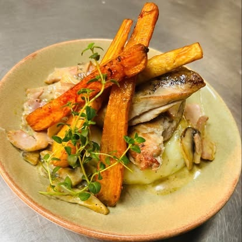
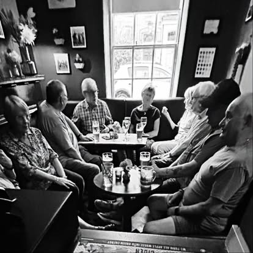

A proper pub on the Westwood
Sunday RoastsPie & Ale NightReal AlesHeated GardenDog Friendly
Set on the edge of the Beverley Westwood pastures, The Woolpack is a traditional pub that's as popular with drinkers as it is with diners, and welcomes walkers and locals alike.
Pull up a chair inside or out in the heated garden, bring the dog, and settle in. Food is freshly prepared at lunchtime and in the evening, and tables can be reserved.
Proper roast dinners with all the trimmings, served from midday. Booking ahead is a good idea.
See food & drink Most Popular · Pie & AleA local favourite: a hearty pie paired with a pint from the bar. Ask us for the next date.
See food & drink Outside · All YearOutdoor seating with heaters so you can sit out for longer, and dogs are always welcome.
See food & drinkThe latest reviews from visitors on Tripadvisor, updated automatically.
Good food, a proper pint and a warm welcome from the regulars.


Whether you've come off the Westwood with muddy boots or you're booking in for Sunday lunch, there's a seat for you.
Four-legged friends are welcome inside and out.
Sit outside all year with heaters to keep the chill off.
Right on the Westwood, the perfect stop after a walk.
Three real ales on the bar, kept the way they should be.
Sunday roasts and Pie & Ale Night get busy, so ring ahead or drop us an email and we'll save you a seat.